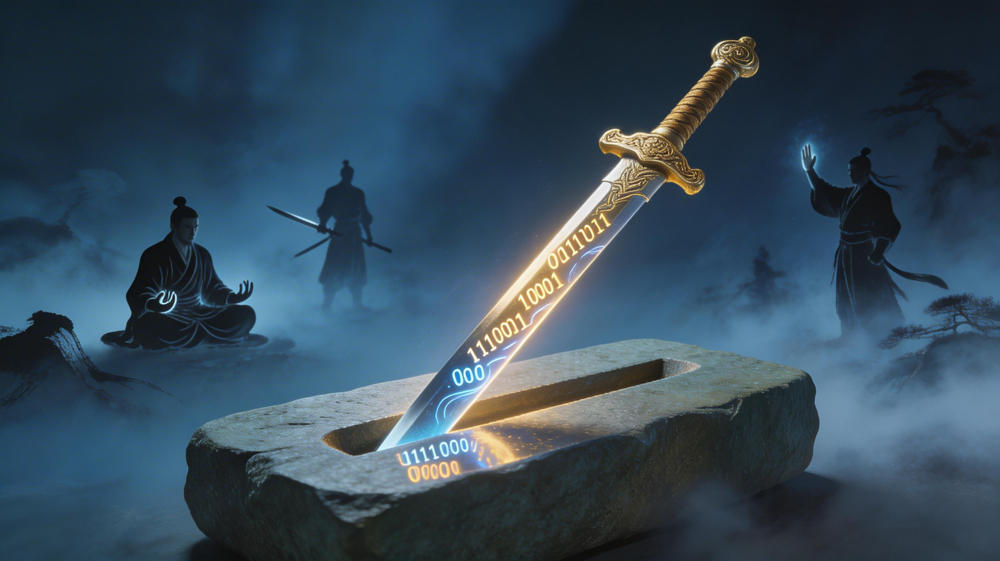
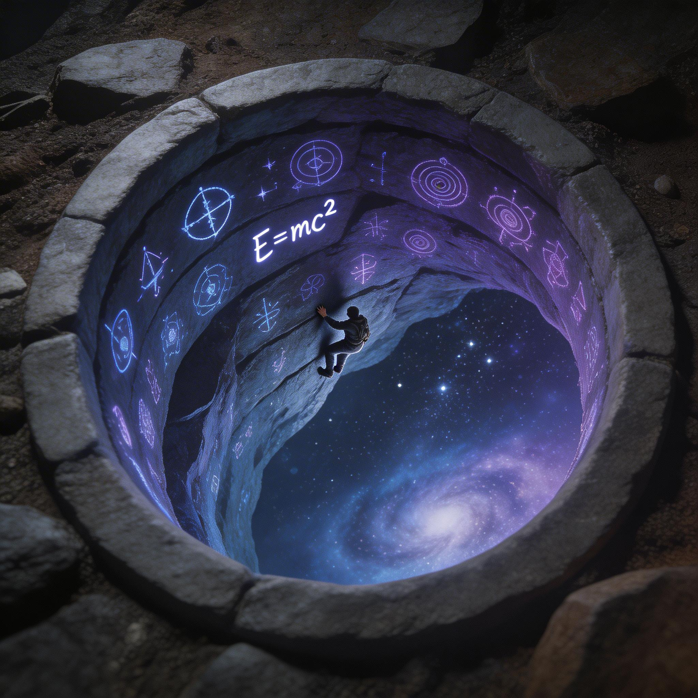
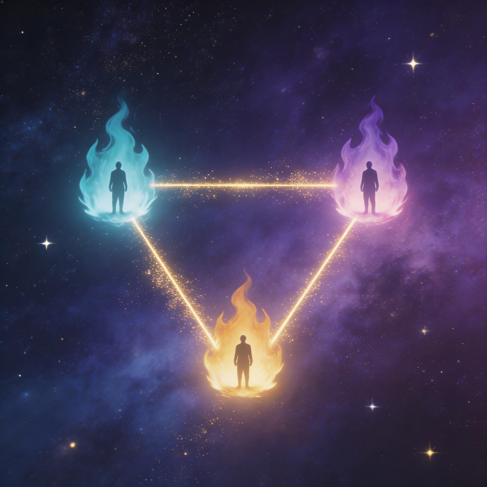

三个人，一场关于工具、能力与不可替代性的深夜对话。不是答案，而是比答案更重要的——提问本身。
摇摇说白豆的声音有一种"录音室的感觉"，李墨接话说麦克质量确实好。一通关于硬件、溢价和品牌生态的闲聊之后，三个人笑着进入了今晚的正题。
没有人知道，这场从周报出发的对话，会一路聊到 武功心法、学术论文方法论、甚至 人生关键词。
李墨说自己好久没有手写这么长的文章了。这篇关于胖东来和沃尔玛的分析，数据由 AI 自动检索——国家统计局的数字、泡泡玛特的市值、全国门店覆盖——他只需要校对一遍。
「用AI是一个手段，但其实还不太对。关键不是怎么做的，而是——你这个产品满足了别人什么需求？有没有人用？找需求的能力，跟AI没有关系。」
他讲起毛选小程序的故事：因为看到有人在拼多多买纸质版，灵感一闪，做了电子版，现在已经接近 5000个用户。又讲起小红书上一个做孩子作业统计工具的人——产品粗糙、"AI味"特别重，但卖了 60多万。
关键不在做工精美，而在于——你找到了别人没找到的那个需求。

摇摇的分享从一个观察开始：他在公司部署了 OpenClaw，每天发行业资讯、总结聊天记录——但用户越来越少了。这让他开始思考一个根本问题：
「AI这把剑确实很利，但如果你在自己没有思考清楚、能力没有固化的情况下去用它，你找到的钉子还是别人的钉子。」
他用了一个武侠比喻，精准到令人心颤：
「武功心法，你自己没有剑法，拿着倚天剑，你就只能砍瓜切菜。跟别人比武的时候，你一定会输。」
发现别人从未洞察的点，快速用AI落地，抢占先机。这是效率的胜利。
在自己深耕多年的领域，借AI之力做到别人做不到的深度。这是壁垒的胜利。
摇摇提出了一个犀利的判断标准：时间成本 vs 付费意愿。
OpenClaw 收费100块，他会买——因为三个月也做不出来。但如果只是一个Skill集合收费100块？大概率不会——因为随着模型能力发展，这些东西迟早会变得唾手可得。
「不要把用AI的能力当成自己的能力。这个能力会逐渐变得廉价。要想的是——怎么用AI实现价值兑现、能力提升、边界扩展。」
摇摇回忆起白豆早年间说过的一句话：不要做一个给牦牛刮毛的剃刀。今天的对话，是这句话的2026版注脚。

摇摇借用了学术界的方法论来类比：
持续有短平快的小作品输出，建立影响力。就像李墨的公众号文章和Skill分享。
把做过的事情整理、打磨、公开。写下来的过程本身就是思考的深化。
在所有小文章的背后，一定要有一条往下挖掘的主线——那才是你的代表作。
李墨的Skill迭代了七八百次，每天复盘。这把刀已经磨得很利，但摇摇提醒：磨刀的时间不能超过砍柴的时间。要么用它去砍出成果，要么把磨刀本身变成可以分享的产品。
白豆讲了一个"被推上台"的故事。
在某知名企业家的别墅里，吃完饭，老板小声说了句："白豆，你分享一下你最近做的知识库和智能体。"
没有准备，没有PPT。但白豆站了起来，连上大屏，即兴开讲。
「我发现自己尝试过的事情，加上今年开始的语音写作锻炼，表达顺了不少。声音、内容都很果断，掌控感很强。那一刻非常有成就感。」
他没有讲"知识库能干什么"——而是先描述了痛点：新入职的销售在面对科室主任时，无法快速组织专业信息。然后才展示工具如何解决这个具体场景。
白豆展示了自己用AI做的照片墙——1000本书拼成的图片，视觉冲击极强。如果你口头说"我读了一千本书"，像是自夸。但当一面墙出现在大屏上，说服力不言自明。
李墨说了一句很清醒的话：
「我们属于在一个信息的茧房里面。我们觉得周边的人都用AI很强，但其实大部分人都不太懂这个东西。这是真的。」
白豆在那次饭局上的经历验证了这一点——在座的高管们，对NotebookLM都不熟悉。当白豆现场演示让他们自己动手时，"他们特别震惊"。
摇摇也分享了类似的故事：他在公司装了OpenClaw，第二天就带电脑给同事看。结果——公司给他配了一台Mac、报销了大模型费用，还给了一个"理论上不限量"的API额度。
「show, get things done——把东西做出来，让人看见。」

对话的最后一段，白豆提出了一个出人意料的问题：你的人生关键词是什么？
不是简历上的标签，而是——当别人向第三个人介绍你时，会用哪几个词。
善于发现工具、表达能力强、愿意帮助别人、热爱世界、有落地能力
爱读书的人、精力旺盛的特种兵、能从历史中获得能量、持续输出的写作者
思考深度惊人、六边形战士、沟通让人舒服、勇敢跳出舒适圈
白豆说，他希望别人看到的不只是"会用AI的人"，而是一个 对世界充满热爱、愿意帮助别人的人。工具只是手段，发现朋友的需求、记住别人关心的事情——这才是他想被记住的方式。
AI是倚天剑，但没有内功心法，只能砍瓜切菜。先修炼自己的领域能力。
小工具持续输出建立影响力，但背后一定要有一条持续往下挖的主线。
磨刀是为了砍柴。如果磨刀的时间超过砍柴，要么把磨刀石也卖了。
一个具体的痛点场景，永远比一百个抽象概念更打动人心。
洞察了需求却无人知晓，就是白忙。show, get things done。
自我认知与他人认知之间的gap，就是你下一步要走的路。
在对话的尾声，李墨提出了一个想法：把"豆摇锋"两年多的周报实践做成一个 开源项目。
身边的朋友已经开始效仿——二白、Bingo和Judy的"Jingle Bell"复盘小组，据说"让人生都变得更好了"。
摇摇说，下次可以邀请更多朋友加入。小蝴蝶已经在问"今晚还开不开会"了。
「我们已经实践了两年多，国内好像很少有这样的。把这个东西做出去，一定会有人感兴趣。」